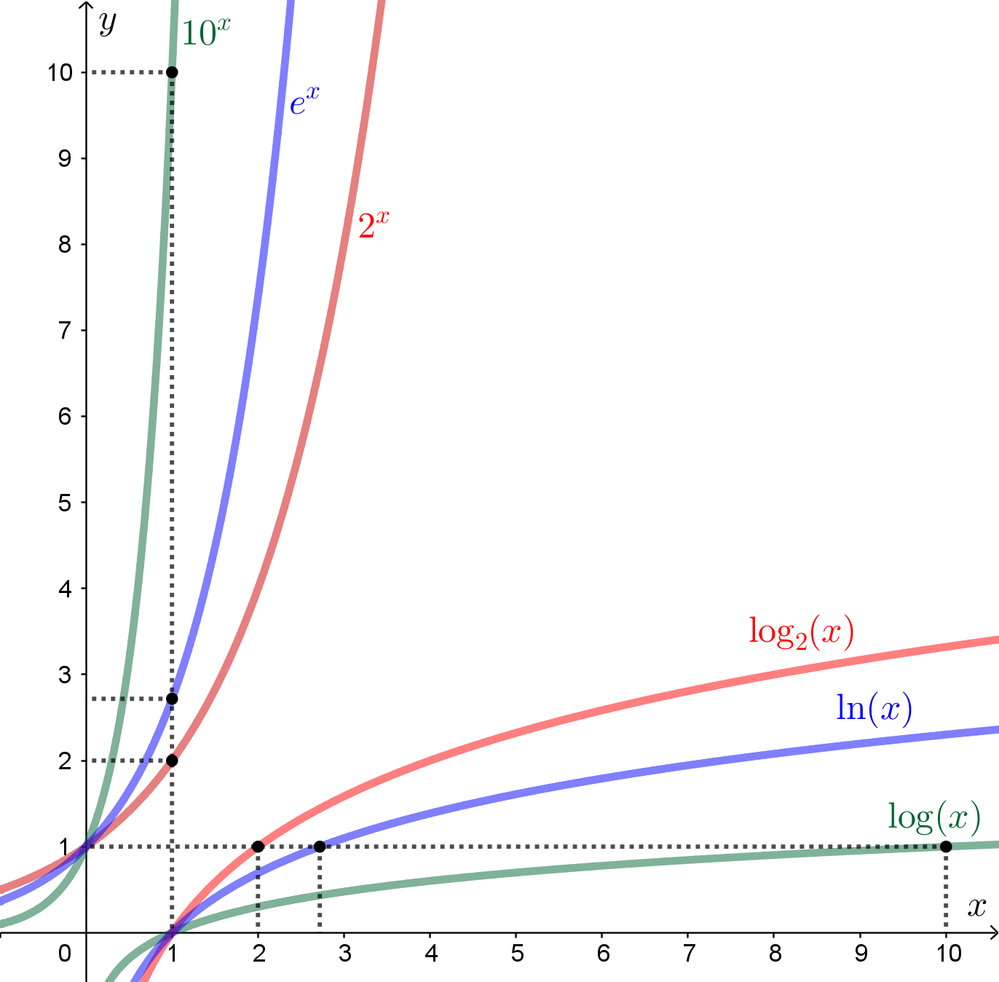

\(a\) opphøyd i \(n\) betyr at \(a\) skal multipliseres med seg selv \(n\) ganger.
\[ a^n = a\cdot a\cdot a\cdot a \cdots a \]Paranteser - potenser - multiplikasjon/divisjon - pluss/minus
\(\log a\) er det vi må opphøye 10 i for å få \(a\).
\[ 10^{\log a}=a \quad \text{og} \quad \log 10^a = a \]Den Briggske logaritmen kalles også 10'er-logaritmen. Dette er en funksjon som sier hva 10 må opphøyes i for å få tallet vi legger inn i funksjonen.
\[ \begin{aligned} \log 1 &= 0 \quad \text{fordi} \quad 10^0=1 \\ \log 10 &= 1 \quad \text{fordi} \quad 10^1=10 \\ \log 100 &= 2 \quad \text{fordi} \quad 10^2=100 \\ \log 300 &\approx 2{,}48 \quad \text{fordi} \quad 10^{2{,}48}\approx300 \end{aligned} \]\(\log_2 a\) er det vi må opphøye 2 i for å få \(a\).
\[ 2^{\log_2 a}=a \quad \text{og} \quad \log_2 2^a = a \]Den binære logaritmen kalles også 2'er-logaritmen. Dette er en funksjon som sier hva 2 må opphøyes i for å få tallet vi legger inn i funksjonen.
\[ \begin{aligned} \log_2 1 &= 0 \quad \text{fordi} \quad 2^0=1 \\ \log_2 2 &= 1 \quad \text{fordi} \quad 2^1=2 \\ \log_2 4 &= 2 \quad \text{fordi} \quad 2^2=4 \\ \log_2 8 &= 3 \quad \text{fordi} \quad 2^3=8 \end{aligned} \]\(\ln a\) er det vi må opphøye \(e\) i for å få \(a\).
\[ e^{\ln a}=a \quad \text{og} \quad \ln e^a = a \]Figuren nedenfor oppsummerer de tre logaritmefunksjonene vi har sett på.

Skriv så enkelt som mulig.
\[ \log 8 + \log 6 + \log\left(\frac{1}{9}\right) \]Vi kan faktorisere og bruke reglene:
\[ \begin{aligned} \log 8 + \log 6 + \log\left(\frac{1}{9}\right) &= \log(2^3)+\log(2\cdot3)+\log\left(\frac{1}{3^2}\right) \\ &= 3\log2+\log2+\log3+\log1-\log3^2 \\ &= 3\log2+\log2+\log3+0-2\log3 \\ &= 4\log2-\log3 \end{aligned} \]En alternativ måte å løse oppgaven på er å slå sammen uttrykket:
\[ \log 8+\log 6+\log\left(\frac{1}{9}\right) = \log\left(8\cdot6\cdot\frac{1}{9}\right) = \log\left(\frac{16}{3}\right) \]Løs likningen
\[ \log(x-4)+1=3 \]Vi får først \(\log(\ldots)\) alene, og tar deretter "ti opphøyd i" på begge sider for å kvitte oss med \(\log\).
\[ \begin{aligned} \log(x-4) &= 2 \\ 10^{\log(x-4)} &= 10^2 \\ x-4 &= 100 \\ x &= 104 \end{aligned} \]Løs likningen
\[ (\ln x)^2-\ln x^5=-6 \]Dette er en andregradslikning! Hvis vi setter \(\ln x=u\), kan likningen skrives om:
\[ \begin{aligned} (\ln x)^2 - 5\ln x + 6 &= 0 \\ u^2 - 5u + 6 &= 0 \\ (u-2)(u-3) &= 0 \\ u &= 2 \vee u=3 \\ \ln x &= 2 \vee \ln x=3 \\ e^{\ln x} &= e^2 \vee e^{\ln x}=e^3 \\ x &= e^2 \vee x=e^3 \end{aligned} \]Løs likningen
\[ 2^x - 4 = 20 \]Først ordner vi likningen slik at vi får \(2^x\) alene. For å "hente ned" \(x\)-en fra eksponenten, tar vi logaritmen på begge sider.
\[ \begin{aligned} 2^x &= 24 \\ \log_2 2^x &= \log_2 24 \\ x\cdot \log_2 2 &= \log_2 24 \\ x &= \log_2 24 \end{aligned} \]Uten kalkulator kan vi ikke finne ut hvilket tall dette er, men vi ser at det er mellom 4 og 5, siden \(2^4=16\) og \(2^5=32\).
Løs likningen
\[ 9^x - 3\cdot3^x = 4 \]Dette er en andregradslikning, fordi \(9^x = 3^{2x} = 3^{x\cdot2} = (3^x)^2\).
Hvis vi setter \(3^x=u\), kan likningen skrives om til
\[ \begin{aligned} u^2 - 3u - 4 &= 0 \\ (u-4)(u+1) &= 0 \\ u &= 4 \vee u=-1 \\ 3^x &= 4 \vee 3^x=-1 \end{aligned} \]Det finnes ingen \(x\) som gjør at \(3^x\) blir negativ, så løsningen er
\[ \begin{aligned} 3^x &= 4 \\ \ln 3^x &= \ln 4 \\ x\cdot \ln 3 &= \ln 4 \\ x &= \frac{\ln4}{\ln3} \end{aligned} \]som også kan skrives som \(x=\log_3 4\), altså det 3 må opphøyes i for å få 4; litt mer enn 1.